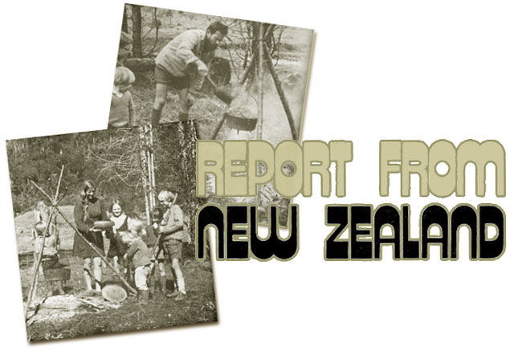

Tim and Jos Vos left the Netherlands a few years back to escape the rat race there, found the same scene in urban New Zealand and left again . . . this time for a remote coastal homestead. The following report was originally written as a letter to a friend who passed it on to MOTHER, with Tim's blessing.
THE Mother Earth News(restricted) has arrived . . . all the back numbers. We haven't read every one of them yet, but those we have looked through were terrific. They came just when we made the jump and started living off God's good land.
I had been working for quite a while in a sawmill and logging camp in the forest to meet some expenses when we finally severed the last ties. Like a ship leaving port for a long voyage, we had stored enough honey, salt, coffee, oil and wheat to last us for a year. We comforted ourselves by saying, "As long as there's oil in the jug and flour in the pot, we'll survive." I must admit, though, that I still felt anxious and the responsibility weighed heavily on me.
Just then MOTHER arrived, and it was a fine, reassuring experience to read the contributions from other pioneers. Some topics were of immediate interest. I couldn't have done without the horseshoeing know-how, for instance, when we got our packhorse, and we found help in the magazine when we had all sorts of trouble with our chickens.
While we looked for a permanent home, I found a temporary job in a sawmill (where I also got loads of good building timber in all sizes, dirt cheap). We settled close by in a vacant farmhouse built by the last pioneer in this district, Mr. T. Hargreaves, who cleared the land out of the subtropical rain forest while he and his wife and child lived in tents on the beach.
In the beginning, and for most of the way, the farm's owner struggled along without power tools. Around us in the yard we could see the handmade implements: pit-sawn and split wood used for barns and fences, horseshoes, the horse-drawn plow rusted, the old dray rotted . . . but still there to show us how the homestead was cleared, roads and bridges built and swamps drained. We wondered and admired.
But there were also piles of liquor bottles (left by a later tenant?) that told the end of the story: first the introduction of mechanized, motorized equipment and electrical appliances, then the loans and financial burdens . . . and at last the attachment, gobbling up the land with the empty farmhouse, wrecked cars and bottles.
After some time on the Hargreaves farm, we found an isolated spot near the coast and got permission to live there as squatters. We were prepared to make do in tents and corrugated iron huts, with our furniture stored in crates under tarpaulins, while we built a house of logs, sod and stone. Instead, we discovered an old place-near the road and just at the start of the track I'm building to the sea-where we can live rent free for as long as we need to.
The house was built of pit-sawn timber in 1913, survived the great earthquake of 1929 and has been empty (except for rats, opossums and borers) since 1953. It's still fit to live indry, with room for the family and livestock-and it's an appropriate setting for our furniture. The oil lamps, camp oven, antique pots and utensils have never looked so right. Everything has a new significance here: The tick of the clock, the laughter of the children, the noise of the kitchenware are different from the same sounds in town.
Jos put up the tapestry loom and started weaving while I began work on the track to the land which is available near the sea. The route will be six miles long, and for a third of its length it will follow the course of an old road from goldmining days. There's hardly anything left of that trail save the printing on the map. The earthquake buried it under slips in many places, trees have fallen across it and the vegetation is just as dense there as elsewhere. But the deer and wild cattle here have used parts of the trace, and because the lost roadway was well surveyed-keeping to the same level everywhere-its recovery is possible. The effort is worthwhile because the rugged terrain will make it difficult to find a better way.
Another two miles of my route will be covered by boat, across a large marshy lake which formed when a landslip blocked the valley. The creek at the end of the waterway follows a dry riverbed toward the sea for two miles more. On both sides rise the steep hills covered with dense bush. It's good going along this stretch, although the water must be forded in several places.
At the mouth of the stream-Falls Creek-is the clearing where we have leave to squat. My sheep are grazing there now, on the sweet grass mingled with many herbs. The fishing is good: pauas, mussels and edible crabs abound. The wild surf breaking on the little white beach is breathtaking. Farther along the coast there's an area of rocks and boulders where it's possible to go at low tide. The early settlers used to drive their cattle along there . . . a hazardous, cruel business, moving the animals slowly so they wouldn't break their legs, but not too slowly lest they be trapped by the incoming tide.
Clearing the track and building our home may take years. Meanwhile, how thankful we are to live in this old shelter, with its atmosphere of early days and the example of pioneer achievements to encourage us! The creek gives us clear water, which I carry in buckets to the house. Washing is a pleasure, standing in the stream as the natives do. We cook outside on open fires when the weather is fine, and bread baked in the camp oven is just as good as what we used to make in the old coal range.
Jos enjoys this sort of life. Her weaving is going well, too (at present she's working on a decorative six-by-eight-foot wall hanging). She's inspired by our great variety of spun wool in many shades-from white to almost black-and finds ideas in the impressive rocks with their patterns of cracks. Our area is rich in lichen growth because of the very wet climate, and many species provide dyes in the deep and bright colors we like: blues, purples, greens, browns and all sorts of yellows. Living in these unspoiled surroundings, being part of them, it's hard not to get the feel of the materials you work with and the themes you want to express.
The children keep up with their lessons by correspondence, and much time is taken up in instructing them. We also teach them to play musical instruments: David the violin, Jaella the autoharp and Reuben the ukulele. Jos also plays the ukulele and I the sitar, and we make joy together on the many rainy days.
And how it rains here! When it comes down it seems as if you can feel the weight of it on the roof. Now and then, though, the sun breaks through and gives us the marvelous sight of diamonds hanging from the steaming leaves. We never lose hope of seeing her again. She'll keep smiling behind the heavy curtain, and so will we.
|
 |
|
|